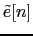

- Graphic interpretation of the most common clustering
techniques
- Example of a passive aperture
response to different incoming signals
- ICSI Speaker Diarization for Broadcast
News blocks diagram
- Acoustic models for speaker clustering
- Speaker turn duration histograms
- Overlap histograms in RT06s conference room
meetings
- Main blocks involved in the meetings speaker
diarization system
- single-channel speaker diarization for
meetings block diagram
- Speaker models initialization based on Gaussian
splitting
- Cross-validation EM training algorithm
- Energy-based detector blocks
diagram
- Left, filter over
.
Decision of silence in red after the thresholding.
- State machine used to apply time
constraints.
- Hybrid Speech/non-speech detector
blocks diagram
- Clusters initialization blocks
diagram
- Friends-and-enemies clusters
initialization process
- Cluster models with Minimum duration and modified
probabilities
- Possible Speaker clustering errors
due to clusters purity problems
- Speech-silence histogram for a full
meeting
- Observed assignment of frames to
Gaussian mixtures
- Evaluation of metric 1 on two clusters
given their models
- Speech/non-speech histograms for
different possible model complexities
- Linear microphone array with all
microphones equidistant at distance d
- Filter and sum algorithm blocks
diagram
- filter-and-sum implementation blocks
diagram
- Cross-correlation values histograms for RT06s AMI
meetings
- Filter and Sum double-Viterbi delays
selection
- Two-step TDOA Viterbi decoding example, step 1
- Two-step TDOA Viterbi decoding example, step 1 for
an individual channel
- Two-step TDOA Viterbi decoding example, step 2
- Multichannel delayed signal sum using a triangular
window
- Locations information contained in the TDOA values
- Fusion of TDOA values and acoustic
features within the speaker diarization module
- First merge cluster-pair BIC values and histogram
for acoustic and TDOA features
- Acoustic weight evolution with the number of
iterations for meeting CMU_20050912-0900
- Energy-based system errors depending on
its segment minimum duration
- Model-based system errors depending
on its segment minimum duration
- Individual meetings DER vs. SNR vs. number of
microphones in the RT06s system
- Development set SNR modifying the percentage of
noise threshold adjustment
- Development set SNR values modifying the Viterbi
transition prob. weights in the F&S algorithm
- Development set SNR values modifying the number of
N-best values used for TDOA selection
- DER for the model complexity selection algorithm
using different CCR values
- DER for the initial number of clusters algorithm
using different CCR values
- DER for the combination of complexity selection +
initial number of clusters using different CCR values
- DER variation with the number of parallel models
used in CV-EM training
- DER variation with the number of friends used in the
friends-and-enemies initialization
- DER variation with the percentage of accepted frames
and used Gaussians in frame purification
- DER scores for the baseline system setting the
relative weights by hand on development data
- DER evolution with the weight computation
iterations
- DER evolution changing the initial feature stream
weights
- DER variation with the number of
Gaussian mixtures initially assigned to the TDOA models
- DER variation with the CCR
parameter in the agglomerate system
- DER variation with the number of
friends in the agglomerate system
- DER variation with the number of EM
iterations of a standard EM-ML training algorithm
- DER variation with the number CV-EM
parallel models
- DER variation with the frame %
acceptance for frame purification algorithm
- DER variation with the Gaussian %
used in the frame purification algorithm
- DER Break-down by meeting for the RT05s conference
data
- DER break-down by show for the RT05s lecture data
- DER break-down by show for the RT06s conference
data
- DER break-down by show for the RT06s lecture data
user
2008-12-08